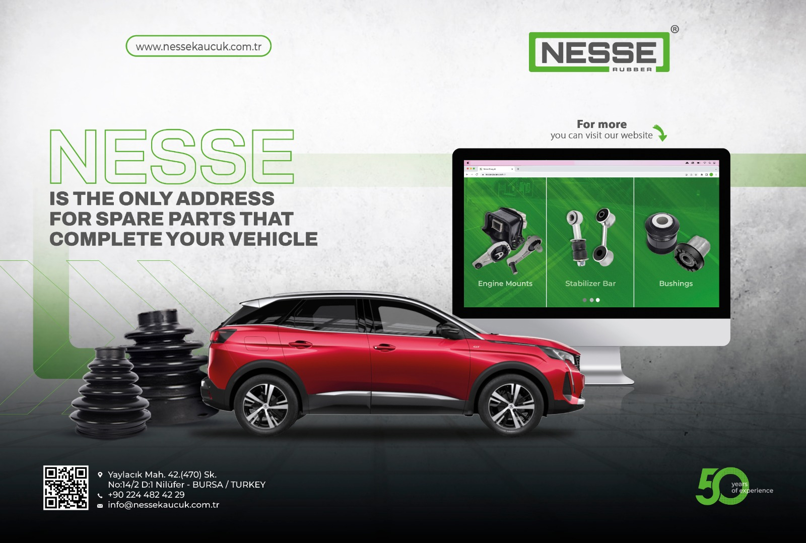
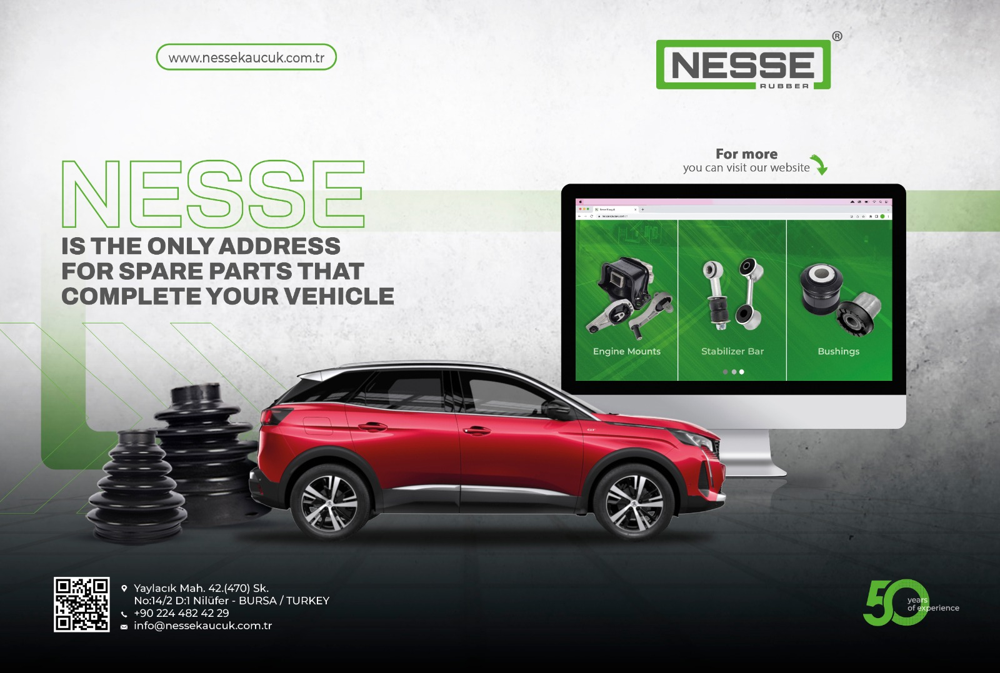

Graphic Designer

Merve TÜRKSEL
Merhaba, ben Merve Türksel. 2003 yılında İstanbul'da doğdum ve Uludağ Üniversitesi Grafik Tasarım bölümünden mezun oldum. Grafik tasarım alanında 1,5 yıldır aktif olarak çalışmaktayım ve bu süre zarfında çeşitli sektörlerde birçok firmayla iş birliği yaptım. Üniversite öncesinde, 9 ay boyunca grafik tasarım stajı yaparak sektöre dair değerli deneyimler kazandım. Bu süreçte yaratıcı çözümler üretme, tasarım trendlerini takip etme ve müşteri memnuniyetini ön planda tutma konularında kendimi geliştirdim. Grafik tasarımda farklı alanlarda yetkinliklerim bulunmaktadır ve her projede yenilikçi ve estetik çözümler sunmaya özen gösteririm. Hedefim, sanatsal vizyonumu ve teknik becerilerimi birleştirerek etkileyici ve fonksiyonel tasarımlar yaratmaktır. İletişim bilgilerim ve portföyüm hakkında daha fazla bilgi almak isterseniz, lütfen benimle iletişime geçin.
Program Bilgilerim
Adobe Photoshop
Adobe Illustrator
Adobe After Effects
Adobe Indesign
Üniversite
Grafik TasarımBursa Uludağ Üniversitesi
Lise
Lise Sabit Büyükbayrak Meslek Lisesi
Web Programcılığı
Dergi İlan Çalışmalarım
 


Stand Tasarımı
Logo Tasarımı
Cafe Sosyal Medya Çalışmaları
Sosyal Medya Reels Çalışmaları
Sosyal Medya Çalışmaları

Sosyal Medya Çalışmaları

Sosyal Medya Çalışmaları

Sosyal Medya Çalışmaları


İletişime Geç
Kestel, BURSA
Email: merve89trksl@gmail.com
Linkedin: https://www.linkedin.com/in/merve-t%C3%BCrksel-356790228/
Behance: https://www.behance.net/merveturksel
İletişime yukarıdaki adreslerden geçebilirsiniz.